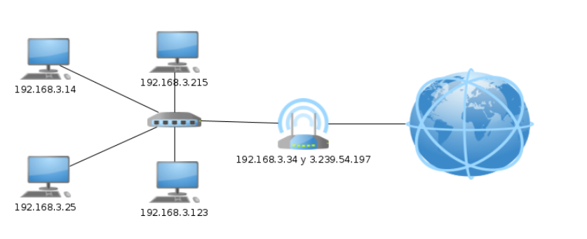
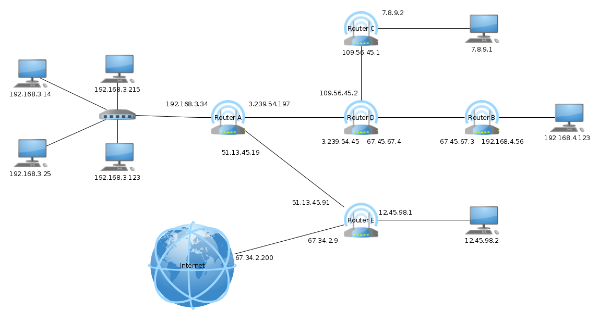
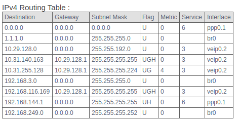

Hurrengo komandoak ip inet 172.17.0.2 erakusten du, eta Interneteko protokoloa erabiltzen duen sare batean ekipoa identifikatzen duen ip pribatua da.
Lau ordenagailu, switch bat eta router bat dituen sare bat ikusiko dugu. Lau ordenagailuek antzeko IPak dituzte, guztiek dute amankomunean 192.168.3 ekin hasten direla. Beraz, sarea 192.168.3.0/24 da.
Hau da, sareko helbide bat ordenagailuek eta gainerako bitek (hosten zati bat) zeroan komunean duten zati osoa da, baina maskara CIDR formatuan adierazita. Broadcasten helbidea da gainerako bitak (hosten zati bat) batera dituela.

| Sare Helbidea | Broadcast Helbidea | Host baten helbidea |
|---|---|---|
| 192.168.3.0/24 | 192.168.3.255 | 192.168.3.77 |
Orain ordenagailu berri bat gehituko dugu Interneten beste aldean

Ordenatu berri horrek 192.168.4.123 IPa du. Badakigu sarea C motakoa zela, beraz, sarearen helbidea 192.168.4.0/24 da. Routerrak 192.168.4.56 helbidea du.
Baina router bakoitzak 2 IP dituela ikus dezakegu, hau da, bi sare desberdinetara konektatuta dagoelako eta sare bakoitzean IP desberdinak dituelako. Sare-interfazeak izeneko bi sare-txartel ere izan behar ditu.
| IP | Mascara | Interfaz de red |
|---|---|---|
| 192.168.3.34 | 255.255.255.0 | eth0 |
| 3.239.54.197 | 255.255.255.0 | eth1 |
| IP | Mascara | Interfaz de red |
|---|---|---|
| 67.45.67.3 | 255.255.255.0 | eth0 |
| 192.168.4.56 | 255.255.255.0 | eth1 |
Linuxen ifconfig komandoa erabiliz, ditugun sare-interfaze guztiak ikusi ahal izango ditugu. Hala ere, orain enp2s0 deitzen zaie, eth0 deitu beharrean. Izena zergatik aldatu den jakiteko, ikus hurrengo esteka. Baita Linuxeko sare-interfazeen izenak eta zergatik aldatu dute sareko interfazeen izena Linuxen

Gogora dezagun une batez Ethernet zertan ari zen. Ethernet Kable batekin zuzenean konektatuta dauden bi ordenagailu (edo Hosts ere deituak) komunikatzeko aukera ematen zuen. Gogoratu Switch batek ordenagailuak zuzenean konektatzen dituela (enchulu elektrikoen erregeleta bat bezala da)
Orduan, ethernet bidez ezin da zuzenean komunikatu 192.168.3.123 host-a 192.168.4.123 host-arekin, fisikoki sare desberdinetan baitaude. Nola bidaltzen da informazioa orduan? Routerren bidez. Esan dezakegu router batek bi sare desberdin konektatzen dituela.
Nola dakigu bi ordenagailu sare desberdinetan daudela? Zure sareko helbidea desberdina delako. Kalkulua egiteko, sare-helbidea eta sare-maskara erabili behar dira.
IP protokoloa routerrek eta ordenagailuek duten softwarea besterik ez da, Interneteko ordenagailu batetik bestera informazioa bidaltzeko aukera ematen duena, zuzenean konektatuta egon gabe. Etherneten zerbait bidaltzen genuen bakoitzean Ethernet paketeen bidez egiten bazen, IP protokoloan Datagramak bidaltzen ditugu. IP protokoloa
Ikus dezagun informazioa duen datagrama bat bidaltzeko erabiltzen den algoritmoa.

Irudia et azaldutako protokoloa jarraitzu, irudian sarea osatzen duten router guztiak erakusten dira.
Ikus dezagun nola bidaltzen den datagrama bat 192.168.3.25 ordenagailutik 192.168.4.123 ordenagailura.
Pasabidea (Puerta de enlace edo Gateway ere esaten zaio) datagramak bidaltzeko defektuzko routerraren IPa baino ez da.
Ikus dezagun orain ordenagailu batzuen lotura-atea
| IP Ordenador | **IP Puerta de enlace ** |
|---|---|
| 182.168.3.215 | 192.168.3.24 |
| 7.8.9.1 | 7.8.9.2 |
| 192.168.4.123 | 192.168.4.56 |
❕ Adi nola, gateway Ipa beti ordenagailuaren sare berdinean dagoela.
Bideratze taula batek solik ezartzen du zein Routerrera bidali behar den ip bakoitza.
| Helmuga | Maskara | Gatewaya | Interfazea | Azalpena |
|---|---|---|---|---|
| 192.168.3.0 | 255.255.255.0 | 0.0.0.0 | eth0 | Sare berdineko helbideak 192.168.3.0/24 |
| 3.239.54.0 | 255.255.255.0 | 0.0.0.0 | eth1 | Sare berdineko helbideak 3.239.54.0/24 |
| 51.13.45.0 | 255.255.255.0 | 0.0.0.0 | eth2 | Sare berdineko helbideak 51.13.45.0/24 |
| 109.56.45.0 | 255.255.255.0 | 3.239.54.45 | eth1 | eth1-tik D routerrera bidaltzen du 109.56.45.0/24 sarerako denean |
| 7.8.9.0 | 255.255.255.0 | 3.239.54.45 | eth1 | eth1-tik D routerrera bidaltzen du 7.8.9.0/24 sarerako denean |
| 67.45.67.0 | 255.255.255.0 | 3.239.54.45 | eth1 | eth1-tik D routerrera bidaltzen du 67.45.67.0/24 sarerako denean |
| 192.168.4.56 | 255.255.255.0 | 3.239.54.45 | eth1 | eth1-tik D routerrera bidaltzen du 192.168.4.56/24 sarerako denean |
| 0.0.0.0 | 0.0.0.0 | 51.13.45.91 | eth2 | Nora bidali ez dakienena, eth2 interfazetik E routerrera bidaltzen defektuzkoa baita |
| Helmuga | Maskara | Gatewaya | Interfazea | Azalpena |
|---|---|---|---|---|
| 192.168.4.0 | 255.255.255.0 | 0.0.0.0 | eth1 | Bera sare berdineko helbideetara 192.168.4.0/24 |
| 67.45.67.0 | 255.255.255.0 | 0.0.0.0 | eth0 | Bera sare berdineko helbideetara 67.45.67.0/24 |
| 0.0.0.0 | 0.0.0.0 | 67.45.67.4 | eth0 | Nora bidali ez dakienena, eth0 interfazetik D routerrera bidaltzen defektuzkoa baita |
Zure linuxean proba dezakezu route `-n komandoarekin eta zure bideratze-taula ikusiko duzu. Ikusiko duzunez, routerrena baino askoz errazagoa da.

Etxean ditugunetako router baten bideratze-taula ere ikus dezakegu:

Adibide komplexuago bat horrelakoa izan daiteke:

Azkenik, ikus dezagun Internet benetan nola ikusten den erakusten duen argazki bat klikatu hemen, hobeto ikusteko:

Interneten geografia azaltzen duten 19 mapa

| Izena | Ordenagailuaren IPa | Maskara | Interfazea | Gateway IPa |
|---|---|---|---|---|
| Ezkerreko ordenagailua | 192.168.3.14 | 255.255.255.0 | eth0 | 192.168.3.34 |
| Eskumanko orgenagailua | 192.168.4.123 | 255.255.255.0 | eth0 | 192.168.4.56 |
| Router A | 192.168.3.34 | 255.255.255.0 | eth0 | 56.34.12.1 |
| 192.168.10.2 | 255.255.255.0 | eth1 | 56.34.12.1 | |
| 56.34.12.3 | 255.255.255.0 | eth2 | 56.34.12.1 | |
| Router B | 192.168.10.1 | 255.255.255.0 | eth0 | 192.168.10.2 |
| 192.168.4.56 | 255.255.255.0 | eth1 | 192.168.10.2 |
| Izena | Maskara | Gatewaya | Interfazea | Azalpena |
|---|---|---|---|---|
| 192.168.3.0 | 255.255.255.0 | 0.0.0.0 | eth0 | Bere sare berdineko helbideak 192.168.3.0/24 |
| 0.0.0.0 | 0.0.0.0 | 192.168.3.34 | eth0 | Ez dakienean nora bidali defktuzko routerrera bidaltzen du A |
| Izena | Maskara | Gatewaya | Interfazea | Azalpena |
|---|---|---|---|---|
| 192.168.4.0 | 255.255.255.0 | 0.0.0.0 | eth0 | Bere sare berdineko helbideak 192.168.3.0/24 |
| 0.0.0.0 | 0.0.0.0 | 192.168.4.356 | eth0 | Ez dakienean nora bidali defktuzko routerrera bidaltzen du B |
| Izena | Maskara | Gatewaya | Interfazea | Azalpena |
|---|---|---|---|---|
| 192.168.3.0 | 255.255.255.0 | 0.0.0.0 | eth0 | Bere sareko helbideak 192.168.3.0/24 |
| 192.168.10.0 | 255.255.255.0 | 0.0.0.0 | eth1 | Bere sareko helbideak 192.168.10.0/24 |
| 56.34.12.0 | 255.255.255.0 | 0.0.0.0 | eth2 | Bere sareko helbideak 56.34.12.0/24 |
| 192.168.4.0 | 255.255.255.0 | 192.168.10.1 | eth1 | 192.168.4.0/24 sarearen datuak B router bidez bidaltzen dira |
| 0.0.0.0 | 0.0.0.0 | 56.34.12.1 | eth2 | Non bidali ez dakiten kasuan, C routerrera defektuz |
| Izena | Maskara | Gatewaya | Interfazea | Azalpena |
|---|---|---|---|---|
| 192.168.10.0 | 255.255.255.0 | 0.0.0.0 | eth0 | Bere sareko helbideak 192.168.10.0/24 |
| 192.168.4.0 | 255.255.255.0 | 0.0.0.0 | eth1 | Bere sareko helbideak 192.168.4.0/24 |
| 0.0.0.0 | 0.0.0.0 | 192.168.10.2 | eth0 | Non bidali ez dakiten kasuan, A routerrera defektuz |
Etxeko helbidearen IPa, maskara eta IParen klasea (A, B edo C) adierazi:
Adibideko Router A-ren ezkerrean 3 ordenagailu gehiago gehitu ezkero. Zehaztu zer IP izan daitezkeen.
Bete hurrengo taula:
| IP | Klasea (A, B, C edo loopback) | Sarearen maskara |
|---|---|---|
| 134.5.34.5 | ||
| 127.213.56.45 | ||
| 214.56.123.87 | ||
| 16.76.196.55 |
Bete hurrengo taula:
| IP eta CIDR | Sarearen maskara |
|---|---|
| 134.5.34.5/4 | |
| 127.213.56.45/7 | |
| 214.56.123.87/8 | |
| 16.76.196.55/24 |
Bete hurrengo taula:
| IP | Sarearen maskara | CIDR |
|---|---|---|
| 134.5.34.5 | 255.0.0.0 | |
| 127.213.56.45 | 255.0.0.0 | |
| 214.56.123.87 | 255.255.0.0 | |
| 16.76.196.55 | 255.255.255.0 |
Bete hurrengo taula:
| Sarearen Helbidea | Broadcast Helbidea | Host baten Helbidea |
|---|---|---|
| 137.56.21.4 | ||
| 210.5.234.255 | ||
| 8.0.0.0/8 |
Bete hurrengo taula:
| Sarearen Helbidea | 1º IP Helbidea | Azken IP Helbidea | Host kopuru Maximoa |
|---|---|---|---|
| 34.67.45.0/24 | 34.67.45.1 | 34.67.45.254 | 254 |
| 123.65.87.0/24 | |||
| 6.76.0.0/16 | |||
| 56.34.0.0/16 | |||
| 78.0.0.0/8 |
Hurrengo diagrama erabiliz, hurrengo taulak bete:

| IP Ordenagailua | Maskara | Gatewaya |
|---|---|---|
| 255.255.255.0 | 192.168.3.34 | |
| 192.168.3.14 | 255.255.255.0 |
| Helburua | Maskara | Gatewaya | Interfazea | Azalpena |
|---|---|---|---|---|
| 255.255.255.0 |
| Helburua | Maskara | Gatewaya | Interfazea | Azalpena |
|---|---|---|---|---|
| 255.255.255.0 |
| Helburua | Maskara | Gatewaya | Interfazea | Azalpena |
|---|---|---|---|---|
| 255.255.255.0 |
Ed Graph tresna erabiliz, hurrengo sare diagrama sortu:
{kind=link}